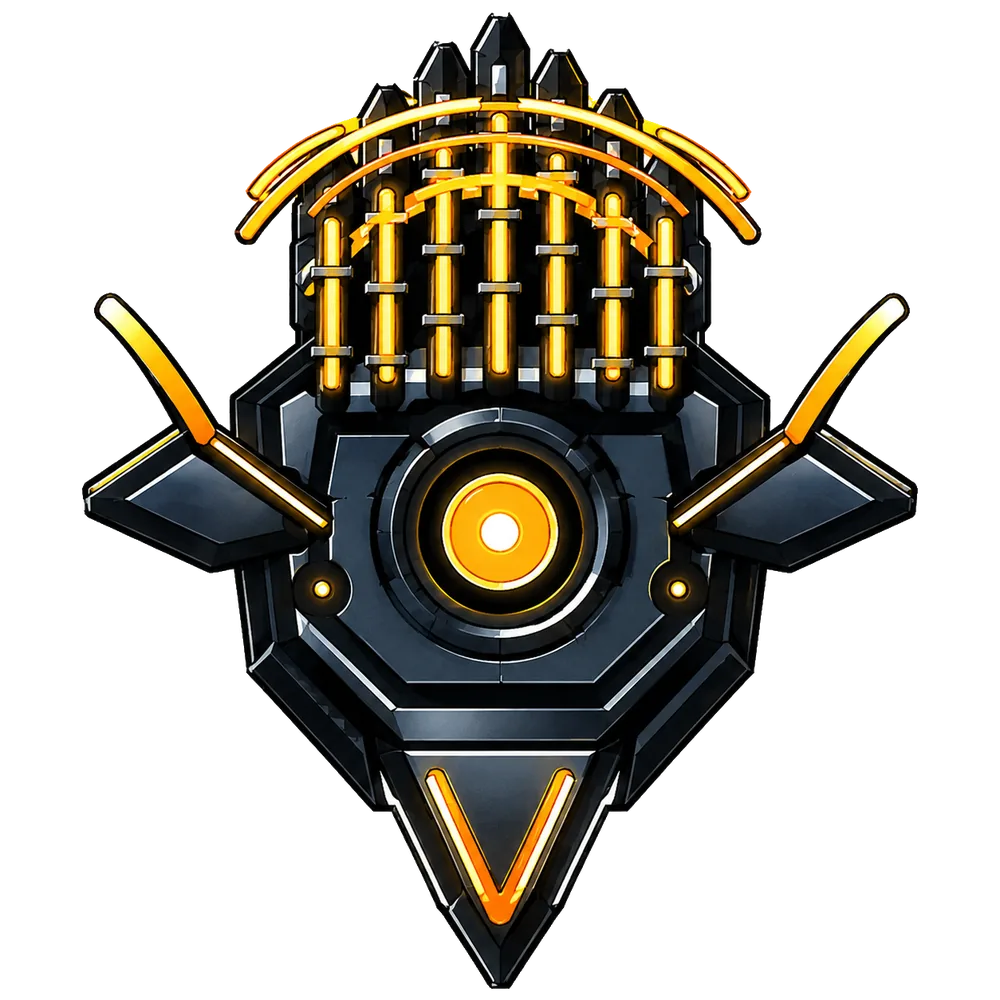
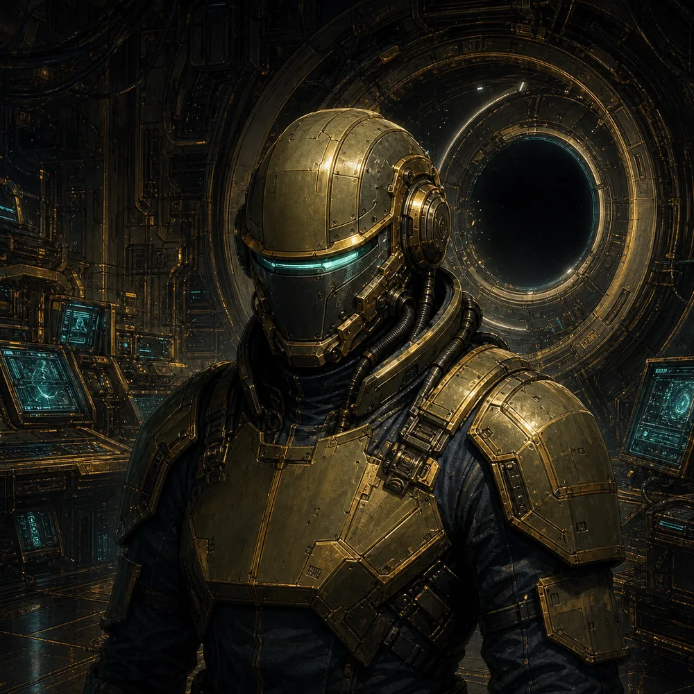
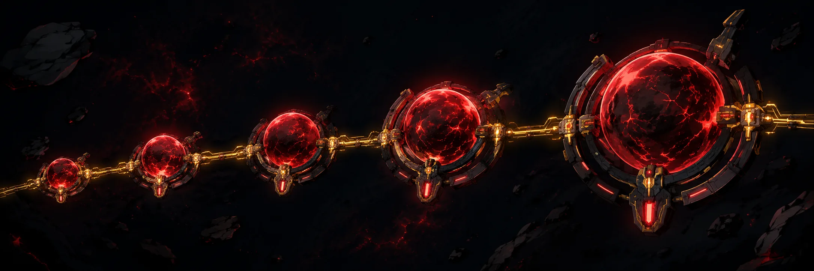

Build the signal
Assemble a five-part deck of salvaged systems, tune your power band, and turn broken tech into a fighting machine.
Incoming transmission · title 001
The signal found you.
Build the deck. Hunt the signal. Outlast the dark.
A sci-fi survival experience from XPLabs Games.

01 / Field intel
Priority transmission
The network is gone. What remains is noise, hostile machinery, and one thin line back to the living. Salvage what you can. Build a system that survives.
Assemble a five-part deck of salvaged systems, tune your power band, and turn broken tech into a fighting machine.
Deploy across hostile operation zones where every route, wave, and extraction puts your loadout to the test.
Join squadron expeditions, climb ranked ladders, and keep the shared signal alive through live operations.
02 / Operation zones
Push through Graveyard Coast, recover lost hardware, and trace the campaign signal farther into a system that should have gone silent.


03 / Long-range campaign
Campaign missions, weekly operation zones, solo expeditions, team runs, and ranked competition keep the network alive long after first contact.

04 / XPLabs Games
We build sharply scoped games with strong worlds, replayable systems, and room to grow.
XPLabs is an independent studio using Unreal Engine and an AI-augmented pipeline to help a tiny team work with the ambition of a much larger one. We start with focused, commercially grounded titles—then use each success to reach for deeper worlds.
Founded by Levi Colby in Honolulu, Hawaiʻi.
05 / Role // 001
Lead development in Unreal Engine. XPLabs funds the core AI toolchain and handles the business—you earn a royalty share of what the games make.
Cursor · OpenAI / Codex · Claude Max
Send a short note, your resume, and a link to something you have made.
Send your resume xp.labs.3d@gmail.com06 / Comms archive
The Last Station is XPLabs Games' first in-development title: a dark sci-fi deck-building survival experience built around salvage, tactical loadouts, campaign missions, and squadron play.
XPLabs is building for iOS, Nintendo Switch, and Nintendo Switch 2, with PC and additional consoles planned as the studio grows.
The studio builds in Unreal Engine with an AI-augmented production pipeline designed to help a small team create, test, and ship quickly.
Yes. XPLabs is looking for a remote lead developer for a royalty-based independent contractor role. The studio funds the core AI development tools.